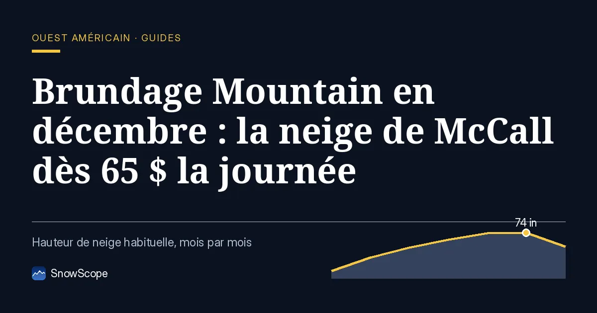

Brundage Mountain en décembre : la neige de McCall dès 65 $ la journée
Brundage domine McCall, une tranquille petite ville lacustre au centre de l'Idaho, et propose l'un des meilleurs antécédents de neige en début de saison de la région. Les forfaits commencent à partir de 65 $ si vous réservez à l'avance, ce qui en fait un choix abordable pour skier en décembre avant que les tarifs des fêtes n'augmentent.
Consultez les prévisions neige en temps réel pour Brundage Mountain sur l'application SnowScopeHauteurs de neige, alertes poudreuse et carte 3D, gratuitement.
La montagne et la ville
Brundage s'élève au nord du lac Payette, avec 6 remontées et environ 49 km de pistes réparties sur 526 m de dénivelé. La base se situe à 1 792 m, mi-montagne autour de 2 055 m, et le sommet à 2 318 m. C'est un petit domaine géré localement avec une atmosphère décontractée et des files d'attente courtes en semaine.
McCall est une ville de montagne avec des hôtels, des restaurants et des magasins. La route depuis Boise suit le canyon de la rivière Payette—pittoresque mais sinueuse, prévoyez du temps supplémentaire et emportez des chaînes en hiver.

Quand la neige arrive et s'installe
Une neige durable atteint généralement mi-montagne vers la mi-octobre. Pendant décembre, les chances d'une profondeur skiable (50 cm ou plus en moyenne hebdomadaire) augmentent régulièrement : 67 % des hivers passés ont un bon manteau la première semaine de décembre, 85 % la deuxième semaine, 93 % la troisième, et 96 % la semaine autour de Noël.
En profondeur réelle, un 1er décembre typique compte 55 cm à mi-montagne ; vers le 15 décembre cela monte à 77 cm, et le jour de Noël atteint 97 cm. À la base, les chiffres sont plus faibles mais toujours fiables : 43 cm le 1er décembre et 57 cm le 15 décembre, avec 65 % des hivers passés dépassant 50 cm vers la mi-mois.

La tendance : une début de saison plus pauvre
La profondeur de neige en début décembre a légèrement diminué au fil du temps. Pendant les 15 premiers hivers de nos 46 années d'historique (1980–81 à 1994–95), mi-montagne retenait généralement 83 cm le 15 décembre. Pendant les 15 hivers les plus récents (2011–12 à 2025–26), ce chiffre est tombé à 61 cm. La part d'hivers avec un bon manteau a chuté de 93 % à 80 %.
L'hiver dernier (2025–26) a souligné ce changement : seulement 47 cm reposaient à mi-montagne le 15 décembre. Le début décembre est plus pauvre maintenant, donc la patience paie—attendez jusqu'à la deuxième moitié du mois pour un pari plus sûr.
Tarifs des forfaits et options d'abonnement
Brundage utilise une tarification dynamique. Les forfaits journaliers commencent à partir de 65 $ certains jours mais augmentent à mesure que votre visite approche. La période de pointe des fêtes s'étend du 19 décembre 2026 au 3 janvier 2027, quand les tarifs montent en flèche.
Si vous prévoyez plusieurs visites, l'Indy Pass offre une bonne valeur : l'Indy Base Pass coûte 419 $ et vous accorde deux jours dans chacun de plus de 300 domaines membres (avec dates d'exclusion) ; l'Indy+ Pass est à 469 $ et supprime les exclusions. Brundage en est membre.
Brundage, Schweitzer et Lookout Pass comparés
La région compte deux autres options à proximité. Schweitzer Mountain, au nord-est de Brundage, se situe globalement plus bas mais accumule une neige plus profonde aux altitudes plus hautes : un 15 décembre typique apporte 138 cm à mi-montagne. Elle propose un forfait 3 jours à 249 $ (environ 83 $ par jour). Lookout Pass, au sud à la frontière de l'État, a une neige de mi-montagne similaire à Brundage—75 cm un 15 décembre typique—et vend des forfaits en semaine à 63 $ quand ils sont réservés à l'avance.
L'avantage de Brundage est la constance aux altitudes plus basses et la flexibilité tarifaire. Pour un skieur de base-à-mi-montagne restant en semaine en décembre, il offre de bonnes chances de neige et le prix d'entrée le plus bas parmi les trois.
Comment planifier votre visite
Réservez vos forfaits tôt : les tarifs de Brundage récompensent la planification anticipée. La deuxième semaine de décembre (à partir d'environ le 7 décembre) a 85 % de chances d'avoir de la bonne neige et se situe avant la montée des fêtes. La troisième semaine—14 à 20 décembre—offre une couverture encore meilleure (93 %) tandis que les tarifs restent inférieurs à la période de pointe.
Si vous êtes flexible, évitez à partir du 19 décembre. Si vous devez skier la semaine de Noël, attendez-vous à des tarifs plus élevés mais à une excellente profondeur de neige : 97 cm à mi-montagne est typique le 25 décembre, et 96 % des hivers passés ont dépassé 50 cm cette date.
Conseils aux skieurs
- Achetez votre forfait au moins deux à trois semaines à l'avance pour verrouiller le prix de base de 65 $ ; le système dynamique de Brundage facture plus pour les réservations de dernière minute.
- Visez la deuxième ou troisième semaine de décembre pour la meilleure combinaison de profondeur de neige et de tarifs plus bas ; évitez la période de pointe du 19 décembre au 3 janvier si vos dates sont flexibles.
- À mi-montagne (2 055 m), vous avez le plus de chances de trouver une neige skiable pendant décembre. La base est plus pauvre ; vérifiez les conditions avant de conduire si vous prévoyez de skier en début de mois.
- La route du canyon de la rivière Payette peut être verglaçée ; prévoyez un temps de trajet supplémentaire depuis Boise et emportez ou louez des chaînes, même si la prévision semble favorable.
- Pour les conditions de risque d'avalanche actuelles si vous prévoyez de quitter les pistes balisées, consultez le bulletin officiel sur avalanche.org.
À propos de ces chiffres
Les hauteurs de neige des stations sont la neige la plus épaisse sur le haut du domaine à la date indiquée ; ce sont des estimations pour une zone, pas une mesure en un point. Les prévisions peuvent changer. Consultez toujours le bulletin d'avalanche officiel avant le hors-piste.
Bulletins d'avalanche officiels: avalanche.org (US national portal)
Citer ce bulletin
Pour la recherche, l'enseignement ou la presse : chiffres et graphiques réutilisables librement sous CC BY 4.0 avec cette citation.
SnowScope (2026), Brundage Mountain en décembre : la neige de McCall dès 65 $ la journée, https://snowscope.app/blog/fr/2026/11/brundage-mountain-mccall-december-ski-budget.html, consulté le 2026-11-14
SnowScope (Atlas Labs). (2026, November 14). Brundage Mountain en décembre : la neige de McCall dès 65 $ la journée. SnowScope snow reports. https://snowscope.app/blog/fr/2026/11/brundage-mountain-mccall-december-ski-budget.html
BibTeX
@misc{snowscope2026brundagemountainmccallde,
author = {{SnowScope (Atlas Labs)}},
title = {Brundage Mountain en décembre : la neige de McCall dès 65 $ la journée},
year = {2026},
month = nov,
howpublished = {\url{https://snowscope.app/blog/fr/2026/11/brundage-mountain-mccall-december-ski-budget.html}},
note = {Published 2026-11-14 20:07 UTC; accessed 2026-11-14}
}· CC BY 4.0 · Méthodes, données et outils →
Brundage Mountain : neige et température selon l'altitude, cet hiver vs l'hiver dernier (outils) →
Suivre Brundage Mountain
Gratuit : un message quand la neige arrive, et la météo chaque matin.